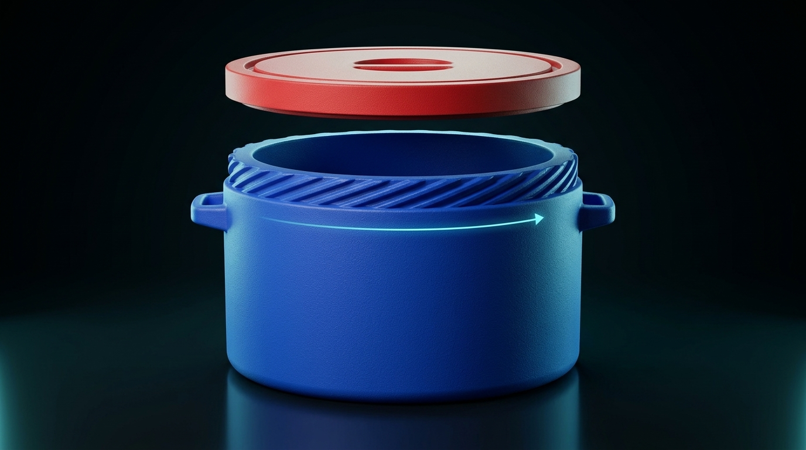

ANGLE 01 · 3/4 ELEVATED HELIX OVERVIEW

🔍 Click to Enlarge1. 20-Start Spiral Helix Collar Overview
Around the entire 24-inch circular collar of the cooler body sit 20 evenly spaced spiral starting threads (every 18°). Just like a multi-start water bottle cap, you never have to hunt for a starting point—drop the lid down at any angle and twist just 1/20th of a circle (18°) to lock all 20 threads simultaneously.